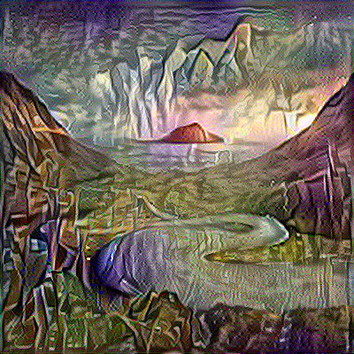

What is neural style transfer
Neural style transfer is an optimization technique used to take three images, a content image, a style reference image (such as an artwork by a famous painter), and the input image you want to style — and blend them together such that the input image is transformed to look like the content image, but “painted” in the style of the style image.
Simply put, it is using neural networks to transfer style from one image to another. Visually, it looks something like this:
 Style Image
Style Image
Voila! The output stylized image is a blend of the two above images.
 Stylized Image